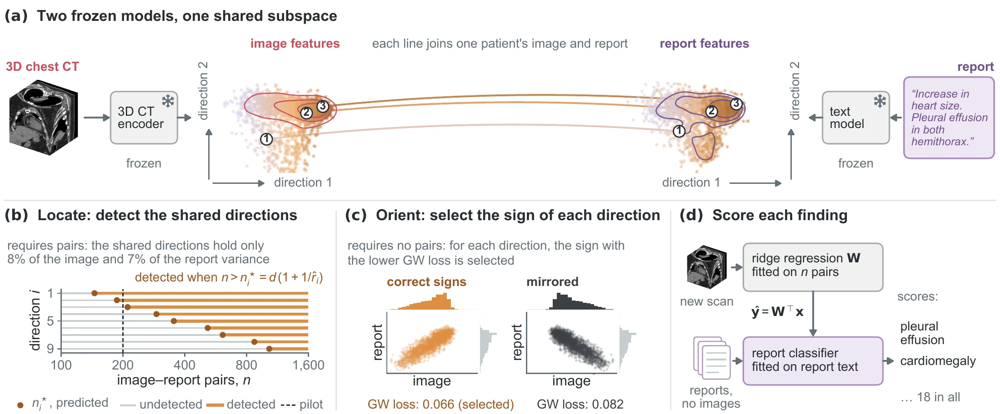
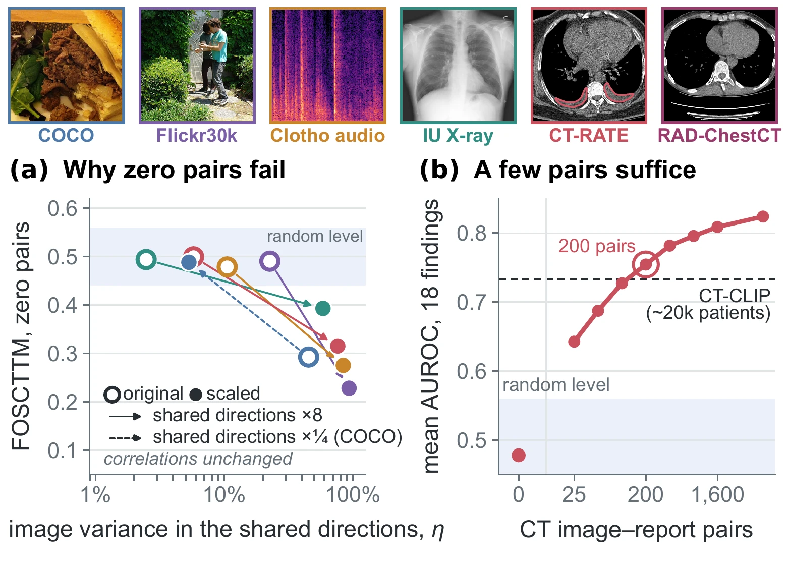
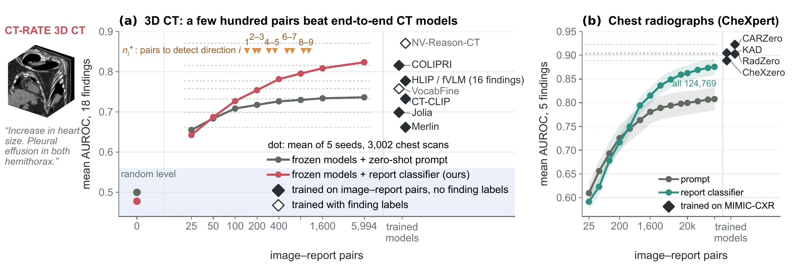
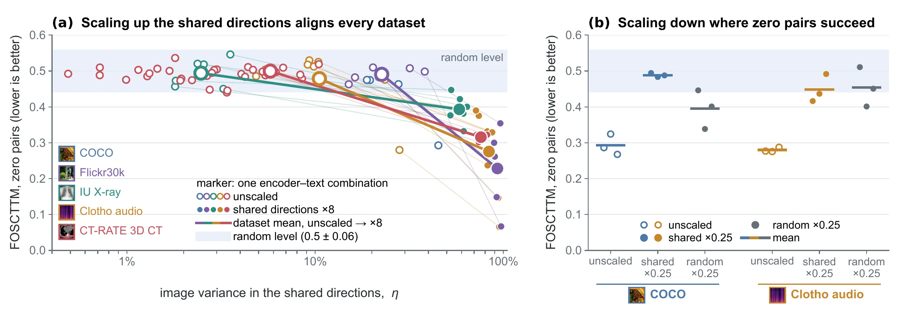
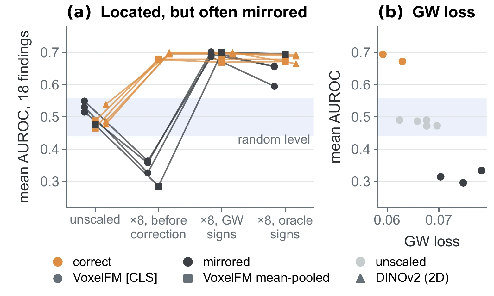
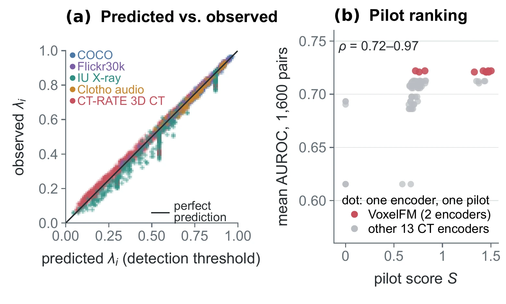
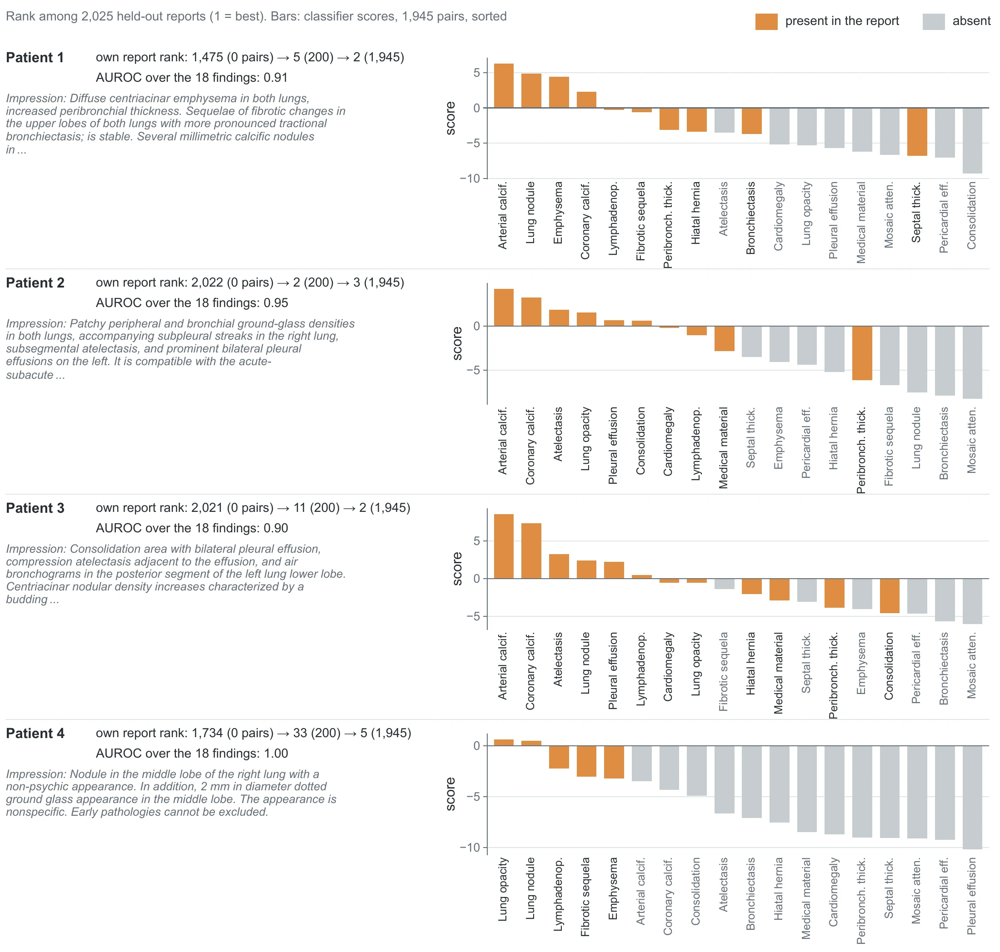

Locate
Find the subspace where image and text features change together. Without pairs, this works only when the subspace has a large part of the variance. On CT, it has 0.5–10.5 %.
1Pattern Recognition Lab, Friedrich-Alexander-Universität Erlangen-Nürnberg
2Department of Orthodontics and Orofacial Orthopedics, Friedrich-Alexander-Universität Erlangen-Nürnberg
Median distance in the plot
The encoders do not change. Only the map W changes.
CT scan Report Report states the finding ·Hover: findings
The Platonic Representation Hypothesis posits that models trained on different modalities converge toward a shared representation. Related work aligns frozen image and text encoders on natural images without paired data. We test zero-pair alignment on five datasets across four modalities: natural images, environmental audio, chest radiographs, and 3D computed tomography (CT). It succeeds only on COCO and fails on the other four. We analyze the failures and find that alignment must first locate the subspace where the modalities co-vary and then orient the mapping within it. Consistent with previous studies, medical imaging is the hardest case: its shared subspace carries the smallest fraction of the variance. When this fraction is small, alignment needs image–text pairs, and random-matrix theory predicts how many pairs are needed. These findings motivate LightAlign: a few pairs let a ridge regression between two frozen encoders locate and orient the mapping simultaneously, and a classifier fitted only on report text then predicts findings from the mapped images. On 3D CT, LightAlign surpasses models trained end to end on image–report pairs without finding-level labels: with only 200 pairs, LightAlign outperforms CT-CLIP on CT-RATE (0.754 vs. 0.733 AUROC), and with only 100 CT-RATE pairs, it does so on RAD-ChestCT, an out-of-distribution dataset from a different hospital. On CheXpert, it reaches 0.862 mean AUROC with only about 5 % as many pairs as models trained on MIMIC-CXR.
Find the subspace where image and text features change together. Without pairs, this works only when the subspace has a large part of the variance. On CT, it has 0.5–10.5 %.
Select the sign of each shared direction. Without pairs, skewed features let the Gromov–Wasserstein loss select the correct sign.
On CT, condition 1 fails without pairs. A random-matrix threshold predicts how many pairs it needs. LightAlign fits a ridge regression on these pairs, which finds and orients the map in one step. A classifier, fitted on report text only, then predicts each finding. The fit takes approximately 1 minute on 4 CPU cores.


Frozen encoders. CT: VoxelFM and Qwen3.5-9B. Chest radiographs: RAD-DINO and Qwen3.5-4B. Scores: mean AUROC.
CT-RATE, 200 pairs
CT-RATE, 5,994 pairs
RAD-ChestCT, 100 CT-RATE pairs
5 % of the MIMIC-CXR pairs





The weights contain the ridge map from VoxelFM to Qwen3.5-9B features and 18 report classifiers, fitted on 5,994 CT-RATE patients. To score a scan, you need VoxelFM and a CUDA GPU.
git clone https://github.com/sypsyp97/lightalign
cd lightalign
pip install -e .
lightalign-predict --ct volume.nii.gz --weights weights/ --voxelfm-code /path/to/VoxelFMThe repository also contains the experiment code and all result files. For research only. The scores are not calibrated probabilities. Do not use them for clinical decisions.